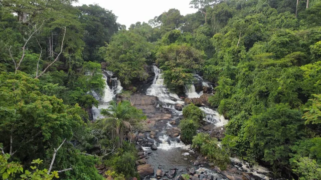

Beautiful Kpatawee Waterfall

Road leading the Kpatawee waterfall

Some rocks found at Kpatawee waterfall

Beautiful bird found at Kpatawee

Traditional hut found at Kpatawee use for resting

vallage hut